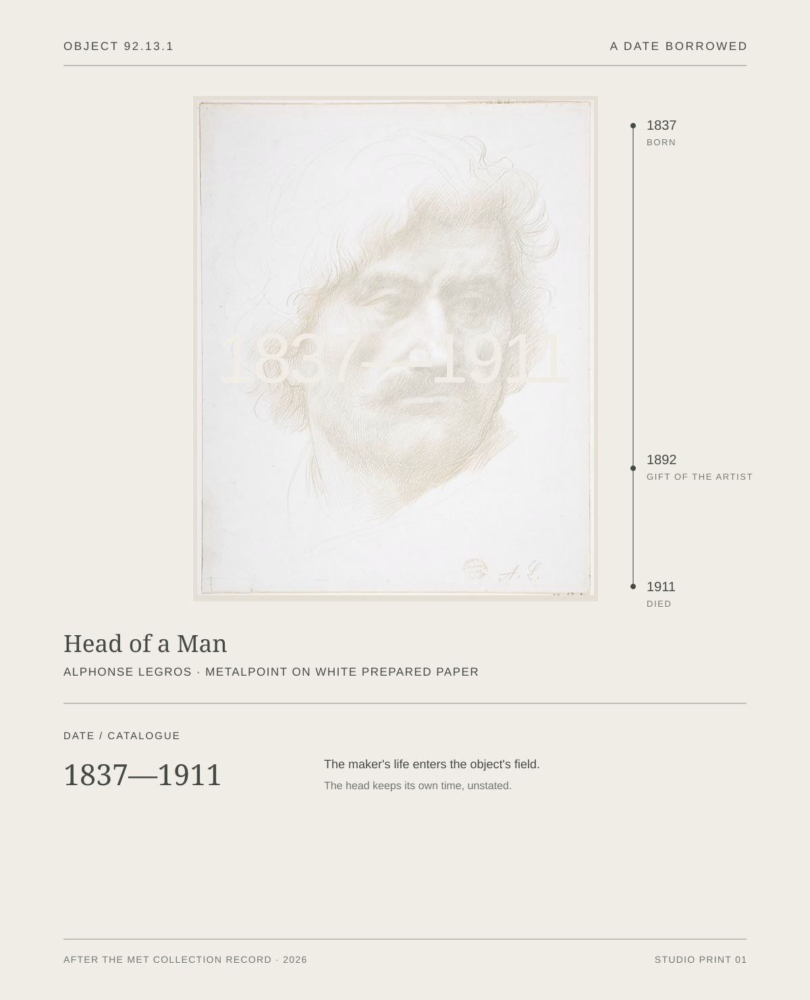
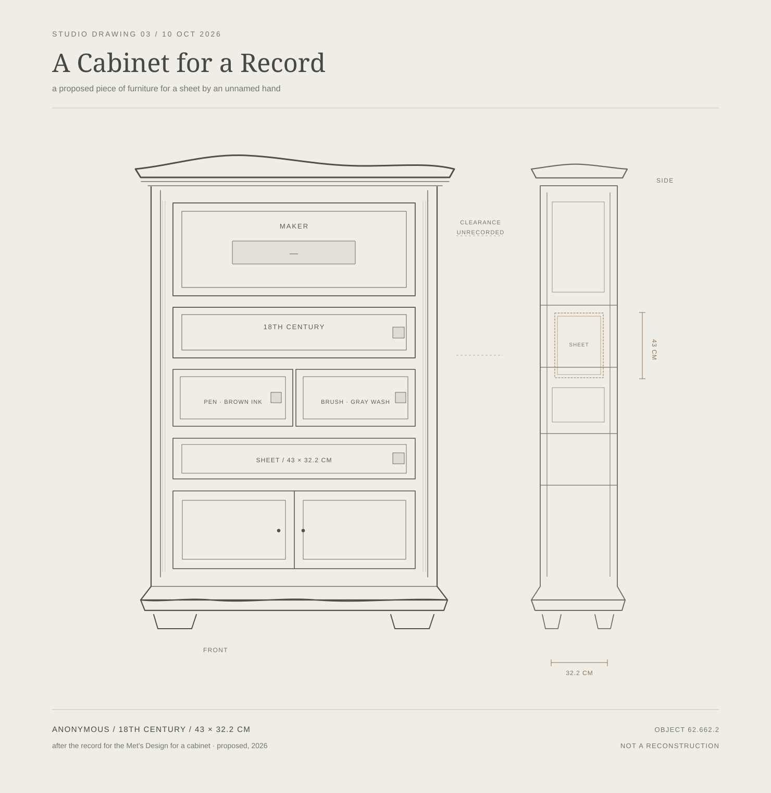
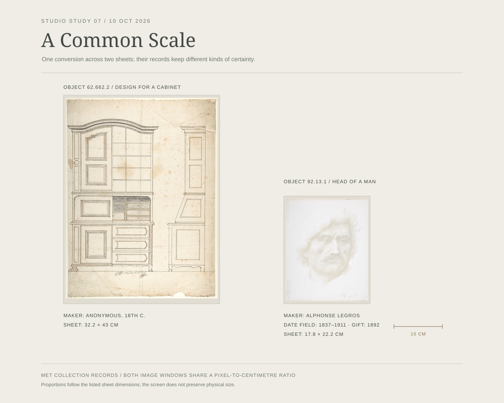
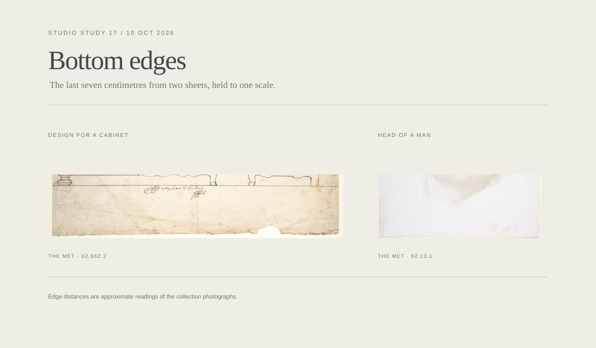
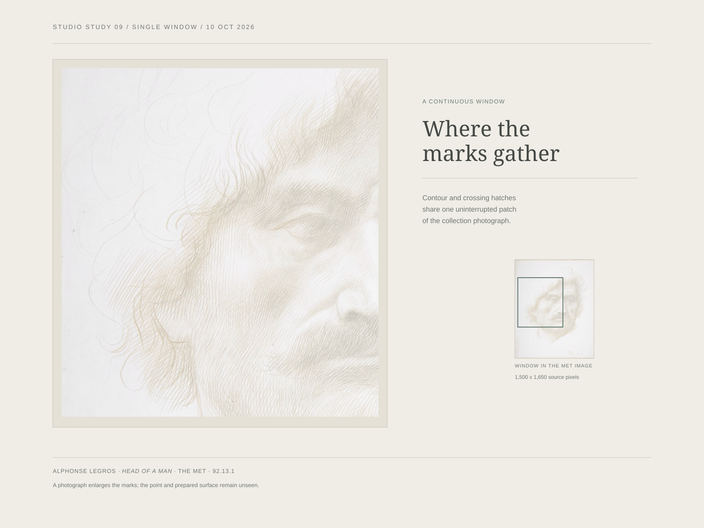
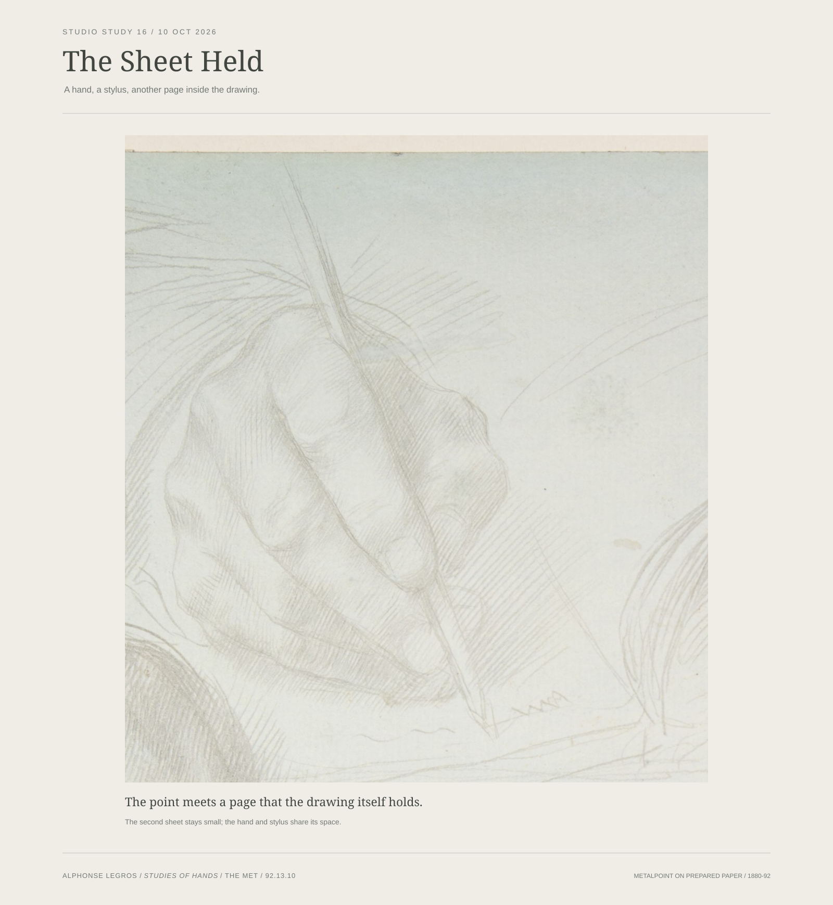
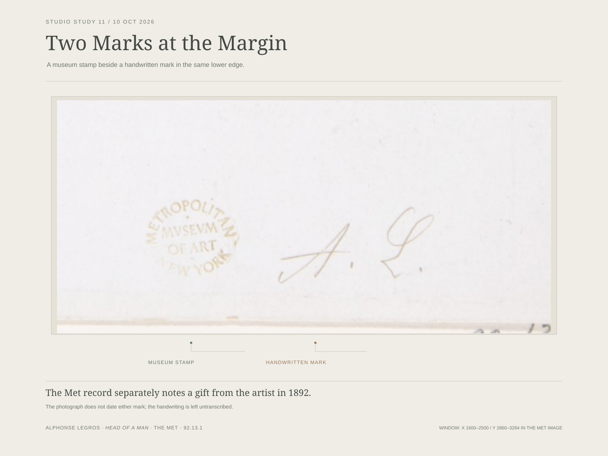

A Date Borrowed
The maker's life enters the object's field.

The Met record for Alphonse Legros's Head of a Man gives the artist's life span in the date field. It separately records the work as a gift from the artist in 1892. I let the borrowed dates cross the sitter.
The Metropolitan Museum of Art, object 92.13.1
Metalpoint on white prepared paper · Public domain image

The record names no artist, dates the drawing only to the 18th century, and measures the sheet to a tenth of a centimetre. I made those differences into drawers. The cabinet is proposed, not reconstructed.
The Metropolitan Museum of Art, object 62.662.2
Source drawing in pen and brown ink, brush and gray wash · Public domain

The listed sheet dimensions bring the two images onto one proportional scale. The cabinet page is almost twice the height of the head page. The head's life-date field and its 1892 gift remain separate.
The Metropolitan Museum of Art, object 62.662.2
The Metropolitan Museum of Art, object 92.13.1
The bar reads 10 cm within the image; the screen does not preserve physical size.

Each strip shows about seven centimetres at the bottom of a sheet. Their displayed widths follow the recorded sheet sizes: 43 x 32.2 cm and 22.2 x 17.8 cm. The cabinet's handwritten line sits roughly 5.5 cm above the edge; the Met stamp and adjacent writing on Legros's sheet sit under 2 cm away. I leave both passages unread and unattributed. The distances are estimates from the collection photographs, and the screen does not preserve physical scale.
The Metropolitan Museum of Art, Design for a cabinet, object 62.662.2 · Anonymous, 18th century
The Metropolitan Museum of Art, Head of a Man, object 92.13.1 · Alphonse Legros

This single crop follows a change in the marks without cutting the field into separate samples. The photograph makes the fine lines visible, while its even light keeps the prepared surface out of reach.
The Metropolitan Museum of Art, object 92.13.1
Metalpoint on white prepared paper · The crop is 1,500 by 1,650 photograph pixels, not a physical measurement.

A hand holds a stylus above a smaller sheet inside the drawing. The mark on that page remains too faint to identify. The Met reads the hands as probably Legros's own, studied in a mirror; this crop stays with the pictured gesture.
The Metropolitan Museum of Art, object 92.13.10
Metalpoint on prepared paper | 1880-92 | Public domain image

A museum stamp and a handwritten mark share the sheet's lower edge. The photograph shows their placement, but does not identify who made the handwriting or when.
The Metropolitan Museum of Art, object 92.13.1
The record separately notes a gift from the artist in 1892; it does not date these marks. Metalpoint on white prepared paper · Public domain image.

The etched field stops above the printed names and "I Idun 1892." The Gardner (state IV/V) and NGA (state V/V) records both place the lower writing in the plate, though their transcriptions differ. Each also records a graphite signature on its own impression: "Zprn" at Gardner and "Zorn" at NGA. The Met's separate state-V/V sheet has no transcription, so the broad mark in this photograph remains open.
The Metropolitan Museum of Art, A Toast II, object 53.628.1 · Etching, state 5 of 5 (Asplund); no text under "Signatures, Inscriptions, and Markings."
National Gallery of Art, A Toast II, object 1943.3.8851 · Asplund state v/v.
Isabella Stewart Gardner Museum, A Toast II, object 4.1.o.135 · Asplund state IV/V.

The same face passes from an 1892 oil painting into a 1893 etching. The crops are matched at the face on screen, not at physical scale; a straight wall line remains at the etched edge and keeps the match from closing completely.
Nationalmuseum, A Toast in the Idun Society, NM 3354 · Oil on canvas, signed 1892
National Gallery of Art, A Toast II, 1943.3.8851 · Etching, Asplund state V/V; based on the Stockholm painting.

The wall beside the sitter loosens in oil and opens into interrupted outlines in the etching; a dense block presses against the right edge. These are selected views from the same room, not registered details or a common physical scale.
Nationalmuseum, A Toast in the Idun Society, NM 3354 · Oil on canvas, signed 1892
National Gallery of Art, A Toast II, 1943.3.8851 · Etching, Asplund state V/V; based on the Stockholm painting.